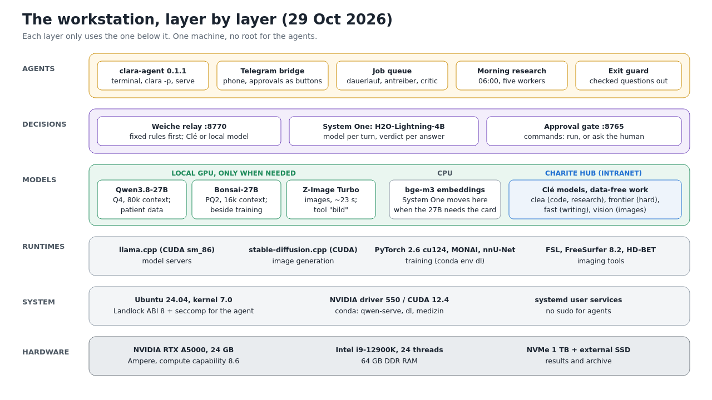

What it takes to set up the same system. Measured on Alita, versions as of October 2026. Full list, services and steps in the README, scripts in local_models/alita.
| Part | What | Note |
|---|---|---|
| GPU | NVIDIA RTX A5000, 24 GB (Ampere) | holds the 27B model in Q4 at 80k context |
| CPU / RAM | i9-12900K, 64 GB DDR RAM | embeddings and run watcher on the CPU |
| OS / driver | Ubuntu 24.04, NVIDIA 550 (CUDA 12.4) | no sudo in daily use; services as systemd user units |
| Clara | Qwen3.8-27B, GGUF UD-Q4_K_M + vision projector | llama.cpp CUDA build, ~30 tok/s, 20.8 GiB VRAM |
| Beside GPU jobs | Ternary-Bonsai-2-27B, PQ2_0, 6.8 GB | 45 tok/s |
| Embeddings | bge-m3 Q8_0 | CPU |
| System 1 gate | H2O-Lightning-4B Q8_0 (decider-4b for comparison) | GPU (CPU while the 27B needs the card); approves commands at p ≥ 0.8, else asks; shadow mode 20-28 Oct, live since 29 Oct 2026 |
| Clé | Charité on-premise model hub, OpenAI-compatible | aliases fast, frontier, eu, light, clea |
| Agents | clara-agent 0.1.1 and clara-system (replaced Hermes Agent v0.21.5 and OpenCode 1.18.35 on 29 Oct 2026) | a Telegram bridge takes prompts from the phone |
| Training | PyTorch 2.6.0+cu124, MONAI 1.5.2, nnU-Net 2.8.1 | conda env dl |
| Imaging | FSL, HD-BET, FreeSurfer 8.2.0 | BIANCA, SynthSeg, WMH-SynthSeg |
| QC pages | NiiVue | bundled, pages work offline |
| Data | WMH Segmentation Challenge 2017 | 60 training + 110 test cases, CC BY-NC 4.0 |
| Data | VALDO 2021, Task 2 (microbleeds) | 72 training scans, three cohorts, CC BY-NC-SA |